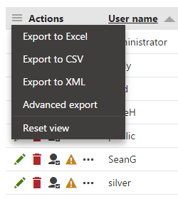
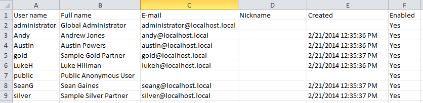

Exporting data from the user interface
The UI data export functionality allows you to export data shown in various listings throughout the whole UI to XLSX, CSV or XML files. The export functionality is accessible in a context menu after clicking the icon in the Actions column header. A drop-down menu will be displayed, offering the following options:
Export to Excel - exports data shown on the current page of the listing to an XLSX spreadsheet.
Export to CSV - exports data shown on the current page of the listing to a CSV file.
Export to XML - exports data shown on the current page of the listing to an XML file.
Advanced export - opens a dialog where export to the three formats mentioned above can be performed based on detailed settings. For more details, please refer to Exporting data from the UI - Advanced export.
Reset view - returns all filtering, ordering and paging options of the listing to the default state (this resets the current data "view" used by the export).

After executing an action from the drop-down menu, your browser may open its standard file download dialog, letting you open or save the file with exported data just as if you were downloading any other file.
Exporting data to Excel
Data exported to an XLSX spreadsheet are displayed just as in the listing. Spreadsheet columns represent the columns of the listing, while rows represent particular records shown in the rows of the listing.
Maximal exported string length
Note that maximal length of text exported into a single cell of an Excel spreadsheet is 32767 (2^15 - 1) characters. Longer strings are trimmed to match this length.
In the following picture, you can see the default appearance of an exported XLSX file. However, it is also possible to use customized templates for Excel export so that you can, for example, add graphics to the header of the spreadsheet. You can find more details on this option in the Configuring UI data export topic.

Exported data
Exporting data to CSV
CSV is an abbreviation for Comma-separated values. It is a file format that stores tabular data in a text form — each line represents one row of data, while particular values (columns) in each row are separated by a comma (,) or a semicolon (;). If a column value contains the delimiter, the whole value is wrapped in double quotation marks in CSV (e.g. the value one,two is exported as "one,two"). If a column value contains double quotation marks, they contain backslashes in CSV (e.g. the value "one is exported as \"one).
A comma is used as a column delimiter by default if you select the Export to CSV action, while you can choose between the comma and the semicolon in the Advanced export dialog. See Configuring UI data export for more information.
The plain text form of exported data stored in a CSV file looks as follows:
User name,Full name,E-mail,Nickname,Created,Enabledadministrator,Global Administrator,administrator@localhost.local,,,YesAndy,Andrew Jones,andy@localhost.local,,2/21/2014 12:35:36 PM,YesAustin,Austin Powers,austin@localhost.local,,2/21/2014 12:35:36 PM,Yesgold,Sample Gold Partner,gold@localhost.local,,2/21/2014 12:35:37 PM,Yes...If the correct delimiter is used, the file can also be opened in a spreadsheet editor such as Microsoft Excel.
Exported data
Exporting data to XML
The following code sample illustrates how exported data are stored in XML files. There is always the NewDataSet root element, which contains a number of Table elements. Each of the Table elements represents a single data record. Its sub-elements represent particular columns of the table, have names identical to the physical database column names and contain the respective values.
<?xml version="1.0" encoding="windows-1250"?><NewDataSet> <cms_user> <UserName>administrator</UserName> <FullName>Global Administrator</FullName> <Email>administrator@localhost.local</Email> <Nickname /> <Created /> <Enabled>Yes</Enabled> </cms_user> <cms_user> <UserName>Andy</UserName> <FullName>Andrew Jones</FullName> <Email>andy@localhost.local</Email> <Nickname /> <Created>2/21/2014 12:35:36 PM</Created> <Enabled>Yes</Enabled> </cms_user> ...</NewDataSet>